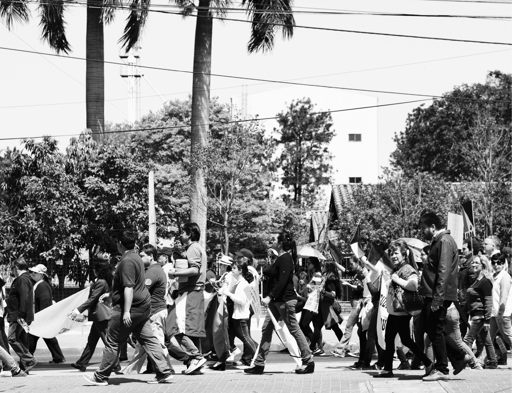
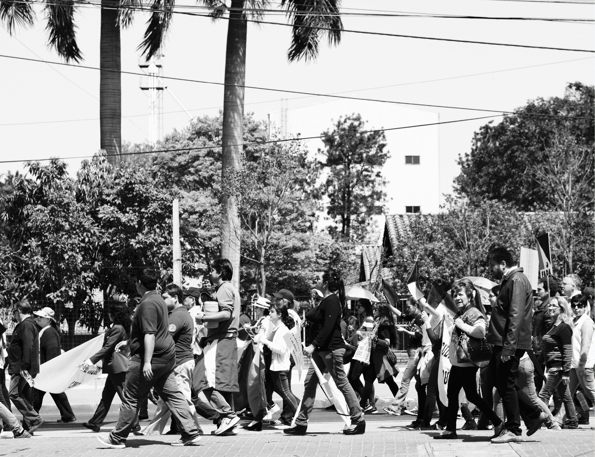
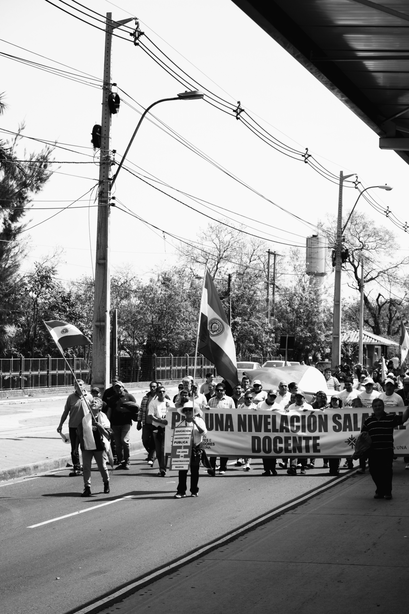
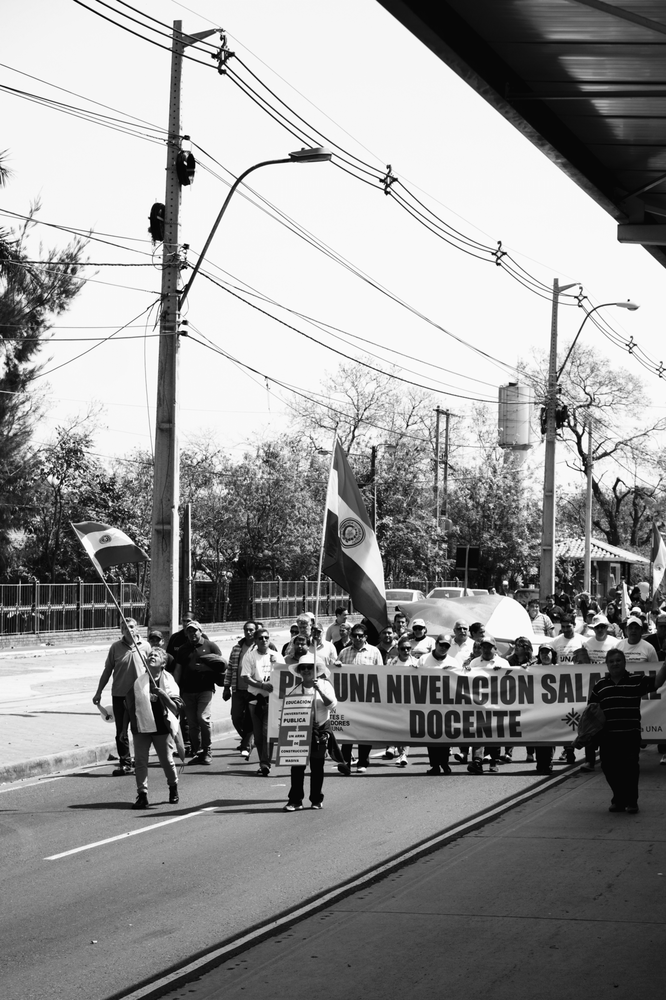

포스터에 담긴 문구인 "Hasta mañana!"는 스페인어로 내일 만나자는 인삿말이다. 그래픽에 쓰인 사진은 2019년 여름 근무했던 국립 아순시온 대학교에서 졸업생 및 재학생들이 재직 교수의 교육권 보장을 위해 수업거부와 무기한 파업을 실시하며 행진한 시위를 촬영한 사진이다.
무더운 날에도 사람들은 흥겹게 노래를 부르고 춤을 추며 평화롭게 시위를 진행했다. 희망차게 더 밝은 내일을 노래하던 그들의 목소리가 평화로운 내일을 바라는 그들의 인삿말과 닮았다는 생각이 들었다.
 

 
